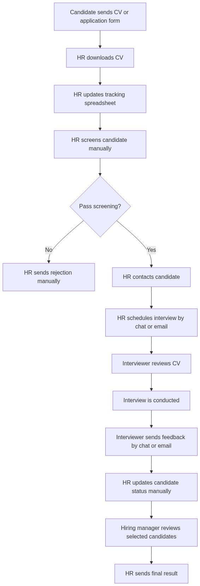
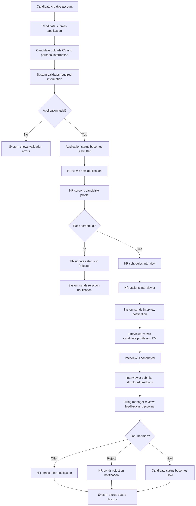

Đang tải tài liệu...
Sơ đồ Quy trình Nghiệp vụ (AS-IS vs TO-BE)
Quy trình Hiện tại
1. Sơ đồ Quy trình AS-IS (Manual Process Flow)
Mô tả quy trình tuyển dụng thực tập sinh thủ công khi chưa áp dụng hệ thống. Quy trình này bị phân mảnh, tốn thời gian trao đổi thủ công qua email và Excel.

Đề xuất Cải tiến
2. Sơ đồ Quy trình TO-BE (System-Driven Process Flow)
Mô tả quy trình tuyển dụng thực tập sinh tự động hóa tập trung thông qua cổng thông tin InternshipHub, tối ưu hiệu suất làm việc cho HR và cải thiện trải nghiệm ứng viên.

Không thể tải tài liệu
Vui lòng đảm bảo bạn đang chạy project này thông qua một web server cục bộ (ví dụ: Python HTTP Server, Live Server) thay vì mở trực tiếp file HTML từ ổ đĩa.
python -m http.server 8000